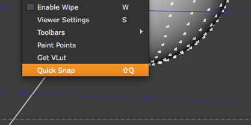
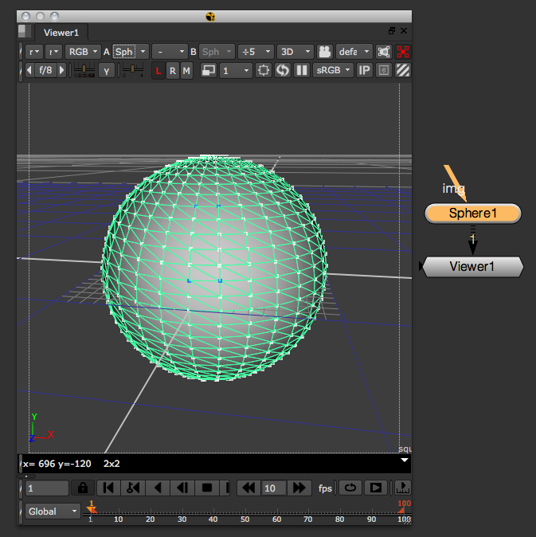

How to access 3D information in a NUKE scene.
Currently there are two nodes that provide the geo knob required to retrieve a vertex selection:
To access the selection info of those nodes at the most basic level, you would do this:
geoSelectKnob1 = nuke.activeViewer().node()['geo']
geoSelectKnob2 = nuke.toNode('GeoSelect1')['geo']
viewerSel = geoSelectKnob1.getSelection() #SELECTION IN THE CURRENTLY ACTIVE VIEWER
geoSel = geoSelectKnob2.getSelection() #SELECTION SAVED IN GEOSELECT NODE
The above will return a list of points per object. Each point in that list carries it’s selection value (‘1.0’ being selected and ‘0.0’ being unselected). So with the above code, this will return the selection state of point index 540 in the first object saved in the GeoSelects geo knob:
geoSel[0][540]
To get useful information from this:
def selectedVertexInfos(selectionThreshold=0.5):
'''
selectedPoints(selectionThreshold) -> iterator
Return an iterator which yields a tuple of the index and position of each point currently selected in the Viewer in turn.
The selectionThreshold parameter is used when working with a soft selection.
Only points with a selection level >= the selection threshold will be returned by this function.
'''
if not nuke.activeViewer():
return
geoSelectKnob = nuke.activeViewer().node()['geo']
sel = geoSelectKnob.getSelection()
objs = geoSelectKnob.getGeometry()
for o in xrange(len(sel)):
objSelection = sel[o]
objPoints = objs[o].points()
objTransform = objs[o].transform()
for p in xrange(len(objSelection)):
value = objSelection[p]
if value >= selectionThreshold:
pos = objPoints[p]
tPos = objTransform * _nukemath.Vector4(pos.x, pos.y, pos.z, 1.0)
yield VertexInfo(p, value, _nukemath.Vector3(tPos.x, tPos.y, tPos.z))
And with the above we can now get the vertex info of all selected points:
def getSelection(selectionThreshold=0.5):
# Build a VertexSelection from VertexInfos
vertexSelection = VertexSelection()
for info in selectedVertexInfos(selectionThreshold):
vertexSelection.add(info)
return vertexSelection
This may seem like an awful lot of hassle, which is why the nukescripts.snap3d module is provided to do all the above work for you for common tasks:
The easiest way to get information from the current vertex selection is using the nukescripts.snap3d module.:
for v in nukescripts.snap3d.getSelection():
print v
This will return the VertexInfo objects. To get each selected vertex’ position:
for v in nukescripts.snap3d.getSelection():
print v.position
There are many functions that will get the selection for you and do fancy stuff with it already. Here is a very simple example of how create a card at the selected vertices’ position and bind a hotkey to it:
nuke.menu( 'Viewer' ).addCommand( 'Quick Snap', lambda: nukescripts.snap3d.translateRotateToPoints( nuke.createNode( 'Card2' ) ), 'shift+q' )
All this is doing is calling the nukescripts.snap3d.translateRotateToPoints method on a newly created card and assigning this action to a menu and hotkey - done.
There are heaps of goodies in this module, so make sure to take a closer look:
dir( nukescripts.snap3d )
# Result:
['VertexInfo', 'VertexSelection', '__builtins__', '__doc__', '__file__', '__name__', '__package__', '_nukemath', 'addSnapFunc', 'allNodes', 'anySelectedPoint', 'averageNormal', 'calcAveragePosition', 'calcBounds', 'calcRotationVector', 'callSnapFunc', 'cameraProjectionMatrix', 'getSelection', 'math', 'nuke', 'planeRotation', 'projectPoint', 'projectPoints', 'projectSelectedPoints', 'rotateToPointsVerified', 'scaleToPointsVerified', 'selectedPoints', 'selectedVertexInfos', 'snapFuncs', 'translateRotateScaleSelectionToPoints', 'translateRotateScaleThisNodeToPoints', 'translateRotateScaleToPoints', 'translateRotateScaleToPointsVerified', 'translateRotateSelectionToPoints', 'translateRotateThisNodeToPoints', 'translateRotateToPoints', 'translateRotateToPointsVerified', 'translateSelectionToPoints', 'translateThisNodeToPoints', 'translateToPoints', 'translateToPointsVerified', 'transpose', 'verifyNodeOrder', 'verifyNodeToSnap', 'verifyVertexSelection']
This example will show how to create new 3D objects at every selected vertex in the viewer. Start by creating a sphere and selecting some vertices on it:
The nukescripts package comes with handy module called snap3d which contains a whole bunch of shortcuts to commonly used tasks. Let’s use getSelection to gain access to all selected vertices in the active viewer:
vsel = nukescripts.snap3d.getSelection()
for v in vsel:
print v
# Result:
<nukescripts.snap3d.VertexInfo instance at 0x1193b2878>
<nukescripts.snap3d.VertexInfo instance at 0x1193b2830>
<nukescripts.snap3d.VertexInfo instance at 0x1193b28c0>
<nukescripts.snap3d.VertexInfo instance at 0x1193b2710>
the VertexInfo object let’s us access the vertex position:
vsel = nukescripts.snap3d.getSelection()
for v in vsel:
print v.position
# Result:
{0, 0.207912, 0.978148}
{0.203368, 0.207912, 0.956773}
{0, 0.669131, 0.743145}
{0.154509, 0.669131, 0.726905}
There, all the hard work is already done, all we need to do is to create the objects we want and assign the values returned by the VertexInfo object:
vsel = nukescripts.snap3d.getSelection()
for v in vsel:
obj = nuke.nodes.Card2()
obj['translate'].setValue( v.position )
This will create a Card2 object on each selected vertex. Let’s create a Scene node and connect them all up as we go. For this I will use enumerate() to get the index for each iteration which I can use as the input number for the Scene:
vsel = nukescripts.snap3d.getSelection()
sc = nuke.nodes.Scene()
for i, v in enumerate( vsel ):
obj = nuke.nodes.Card2()
obj['translate'].setValue( v.position )
sc.setInput( i, obj)
To make this more flexible, let’s not hard code the Card2 object but define the type of object we want to scatter in a variable:
objType = 'Card2'
vsel = nukescripts.snap3d.getSelection()
sc = nuke.nodes.Scene()
for i, v in enumerate( vsel ):
obj = eval( 'nuke.nodes.%s()' % objType )
obj['translate'].setValue( v.position )
sc.setInput( i, obj)
And lastly, we will connect the viewer to the new Scene node so we see the result immediately:
objType = 'Card2'
vsel = nukescripts.snap3d.getSelection()
sc = nuke.nodes.Scene()
for i, v in enumerate( vsel ):
obj = eval( 'nuke.nodes.%s()' % objType )
obj['translate'].setValue( v.position )
sc.setInput( i, obj)
nuke.connectViewer( 1, sc )
To put this functionality into the snap menu we need to wrap up the code into a function and assign it to the Axis/Snap menu:
def scatterObjects():
objType = 'Card2'
vsel = nukescripts.snap3d.getSelection()
sc = nuke.nodes.Scene()
for i, v in enumerate( vsel ):
obj = eval( 'nuke.nodes.%s()' % objType )
obj['translate'].setValue( v.position )
sc.setInput( i, obj)
nuke.connectViewer( 1, sc )
nuke.menu( 'Axis' ).addCommand( 'Snap/Scatter Objects', lambda: scatterObjects() )
When running a function like this from the Snap menu, we can access the node the script is run from with nuke.thisNode(). So let’s add another line just before connecting the viewer to connect the current node to the Scene as well:
def scatterObjects():
objType = 'Card2'
vsel = nukescripts.snap3d.getSelection()
sc = nuke.nodes.Scene()
for i, v in enumerate( vsel ):
obj = eval( 'nuke.nodes.%s()' % objType )
obj['translate'].setValue( v.position )
sc.setInput( i, obj)
sc.setInput( i+1, nuke.thisNode() )
nuke.connectViewer( 1, sc )
nuke.menu( 'Axis' ).addCommand( 'Snap/Scatter Objects', lambda: scatterObjects() )
Run this from the new “Scatter Objects” menu entry again to see the new node connection. In order to control the newly create objects, let’s create a couple of user knobs in the Scene node so the user can adjust the size and position of the new objects:
def scatterObjects():
vsel = nukescripts.snap3d.getSelection()
sc = nuke.nodes.Scene()
# add user knobs to control new nodes:
offsetKnob = nuke.XYZ_Knob( 'offset' )
sc.addKnob( offsetKnob )
scaleKnob = nuke.Double_Knob( 'scale' )
scaleKnob.setValue( 1 ) # set the initial value for scale to 1
sc.addKnob( scaleKnob )
Instead of just assigning the respective vertex position to each new object, we can now create expressions to link everything to the master Scene node:
for i, v in enumerate( vsel ):
obj = eval( 'nuke.nodes.%s()' % objType )
# assign expressions to link to scene node's user knobs using the respective vertex position as the initial translation
obj['translate'].setExpression( '%s + %s.offset' % ( v.position.x, sc.name() ), 0 )
obj['translate'].setExpression( '%s + %s.offset' % ( v.position.y, sc.name() ), 1 )
obj['translate'].setExpression( '%s + %s.offset' % ( v.position.z, sc.name() ), 2 )
obj['uniform_scale'].setExpression( '%s.scale' % sc.name() )
sc.setInput( i, obj)
Now for one last tweak:
Let’s give the user control over what kind of objects will be created at each selected vertex. To do this we use NUKE’s panel code to create a simple panel with a dropdown menu to offer the use a the choices:
# pop up a panel to ask for the desired object type
# the dictionary maps the name in the panel to the actual class used
typeDict = dict( Axis='Axis', Card='Card2', Sphere='Sphere', Cylinder='Cylinder', Cube='Cube' )
# create the initial panel and give it a title
p = nuke.Panel( 'Pick object type to scatter' )
# add a drop down list with the dictionary's keys as choices
p.addEnumerationPulldown( 'object', ' '.join( typeDict.keys() ) )
# adjust the panel's width a bit
p.setWidth( 250 )
# if the use confirms the dialog, return the respective node class
if p.show():
objType = typeDict[ p.value( 'object' ) ]
else:
return
And here is the complete code:
import nuke
import nukescripts
def scatterObjects():
'''
Places an object on each selected vertex. The new Scene node gets user knobs to control the new objects.
args:
obj - class of object to scatter (default = Card2)
'''
# pop up a panel to ask for the desired object type
# the dictionary maps the name in the panel to the actual class used
typeDict = dict( Axis='Axis', Card='Card2', Sphere='Sphere', Cylinder='Cylinder', Cube='Cube' )
# create the initial panel and give it a title
p = nuke.Panel( 'Pick object type to scatter' )
# add a drop down list with the dictionary's keys as choices
p.addEnumerationPulldown( 'object', ' '.join( typeDict.keys() ) )
# adjust the panel's width a bit
p.setWidth( 250 )
# if the user confirms the dialogsave the choice for later, otherwise do nothing
if p.show():
objType = typeDict[ p.value( 'object' ) ]
else:
return
vsel = nukescripts.snap3d.getSelection()
sc = nuke.nodes.Scene()
# add user knobs to control new nodes:
offsetKnob = nuke.XYZ_Knob( 'offset' )
sc.addKnob( offsetKnob )
scaleKnob = nuke.Double_Knob( 'scale' )
scaleKnob.setValue( 1 )
sc.addKnob( scaleKnob )
for i, v in enumerate( vsel ):
obj = eval( 'nuke.nodes.%s()' % objType )
# assign expressions to link to scene node's user knobs
obj['translate'].setExpression( '%s + %s.offset' % ( v.position.x, sc.name() ), 0 )
obj['translate'].setExpression( '%s + %s.offset' % ( v.position.y, sc.name() ), 1 )
obj['translate'].setExpression( '%s + %s.offset' % ( v.position.z, sc.name() ), 2 )
obj['uniform_scale'].setExpression( '%s.scale' % sc.name() )
sc.setInput( i, obj)
sc.setInput( i+1, nuke.thisNode() )
nuke.connectViewer( 1, sc )
Don’t forget to put a line in your menu.py to add this to the actual snap menu, eg:
nuke.menu( 'Axis' ).addCommand( 'Snap/Scatter Objects', lambda: scatterObjects() )